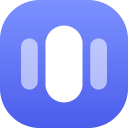

Fill ModeFill Mode
비디오의 레터박스(검은 여백)를 제거하는 크롬 확장 프로그램. 세로(9:16) 모니터와 커스텀 비율까지 지원합니다. A Chrome extension that removes video black bars — with vertical (9:16) monitor and custom aspect-ratio support.
Chrome에 추가 (심사 중) Add to Chrome (in review)Chrome Web Store 심사가 끝나면 설치 링크가 연결됩니다 The install link will be updated once the Chrome Web Store review completes
주요 기능Features
가로·세로 프리셋 10종10 ratio presets
16:9, 21:9, 32:9 같은 가로는 물론 9:16, 9:21 등 세로 모니터 프리셋까지 — 피벗 모니터 사용자를 위한 기능입니다. Landscape (16:9, 21:9, 32:9) plus portrait presets (9:16, 9:21) — built for pivot-monitor users.
커스텀 비율 입력Custom ratios
9:19.5 같은 비율이나 2160x3840 같은 해상도를 직접 입력해 어떤 화면에도 맞출 수 있습니다. Type any ratio (9:19.5) or resolution (2160x3840) to match any display.
위치 이동 (Pan)Pan control
D-pad와 숫자 입력으로 크롭 중심을 이동. 위치는 사이트별로 기억되어 다음 비디오에도 유지됩니다. Move the crop center with a D-pad or numeric input. Position is remembered per site across videos.
전체화면 단축키 + HUDFullscreen shortcuts + HUD
전체화면에서도 키보드로 조작하고, 결과를 화면 위 HUD로 확인. 키는 원하는 대로 바꿀 수 있습니다. Control everything from the keyboard even in fullscreen, with on-screen HUD feedback. Keys are remappable.
6개 언어 지원6 languages
한국어, 영어, 일본어, 중국어 간체, 스페인어, 프랑스어를 지원합니다. Korean, English, Japanese, Simplified Chinese, Spanish, and French.
데이터 수집 없음No data collection
분석 도구도, 외부 서버도 없습니다. 설정은 내 브라우저에만 저장됩니다. No analytics, no external servers. Settings stay in your browser.
기본 단축키Default shortcuts
| 동작Action | 키Key |
|---|---|
| 켜기/끄기Toggle on/off | Z |
| 비율 프리셋 순환Cycle ratio presets | X |
| 배율 감소 / 증가Decrease / increase zoom | [ ] |
| 위치 이동Pan | Shift + ← ↑ ↓ → |
| 위치 초기화Reset position | Shift + X |
모든 키는 설정 페이지에서 변경할 수 있고, 한글 자판 상태에서도 동작합니다. Every key is remappable from the options page and works regardless of your keyboard's IME language.